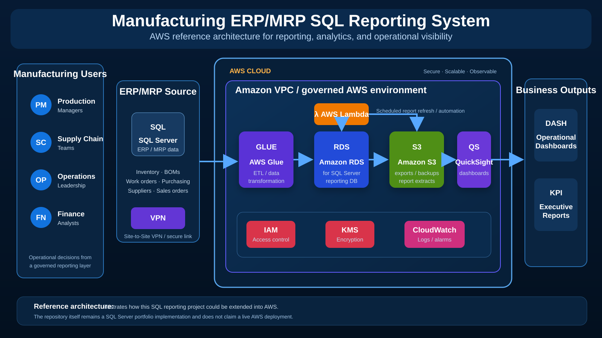

SQL SERVER · ERP/MRP · MANUFACTURING
Manufacturing ERP/MRP SQL Reporting
SQL Server reporting architecture for production, inventory, bill of materials, purchasing, suppliers, sales orders, and operational decision support.
SQL ServerT-SQLERPMRPBOMInventoryReporting
DATA FLOW
Operational data to manufacturing decisions
DATAERP/MRP Data
Orders, inventory, BOMs, suppliers, and production records.
MODELSQL Server
Relational manufacturing data model.
LOGICViews & Queries
Reusable T-SQL reporting logic.
REPORTOperations Reporting
Production and supply-chain visibility.
DECIDEBusiness Action
Scheduling, purchasing, and inventory decisions.
AWS REFERENCE ARCHITECTURE
Manufacturing ERP/MRP Reporting on AWS
Conceptual AWS extension showing secure connectivity, ETL, SQL Server reporting storage, scheduled automation, dashboards, encryption, access control, and monitoring.

Reporting capabilities
✓ Bills of materials and component relationships✓ Inventory, work orders, purchasing, and suppliers✓ Sales orders and production reporting✓ Reusable queries and data-integrity-oriented design
Project links
The standalone repository contains schema, seed data, reporting queries, reusable database objects, project documentation, and the AWS reference architecture.